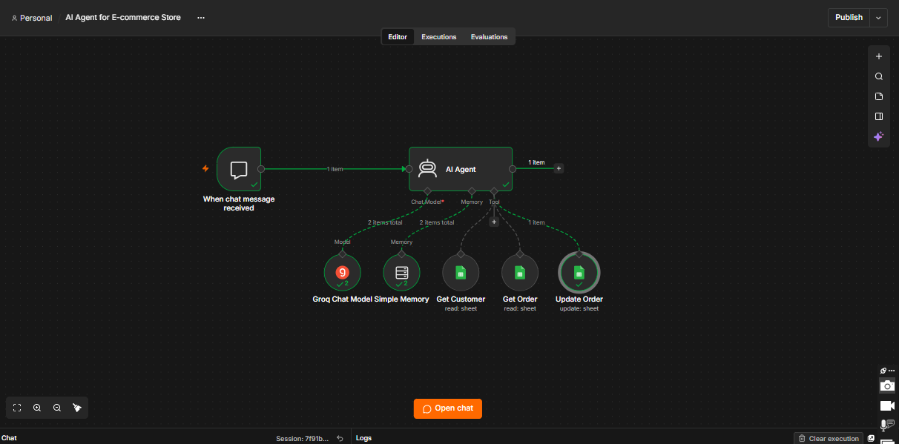
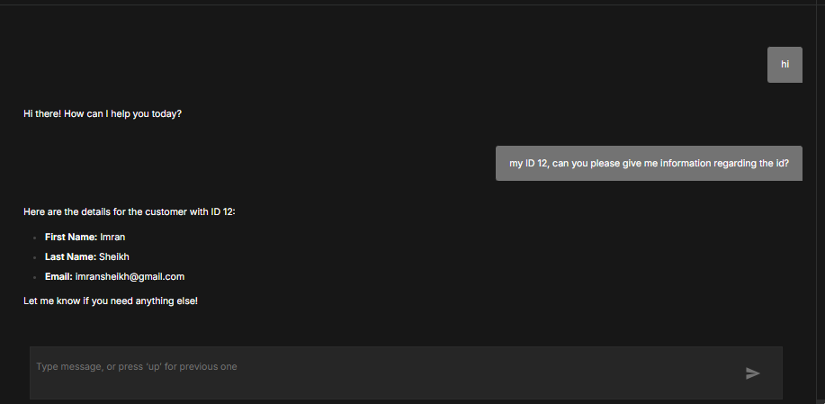
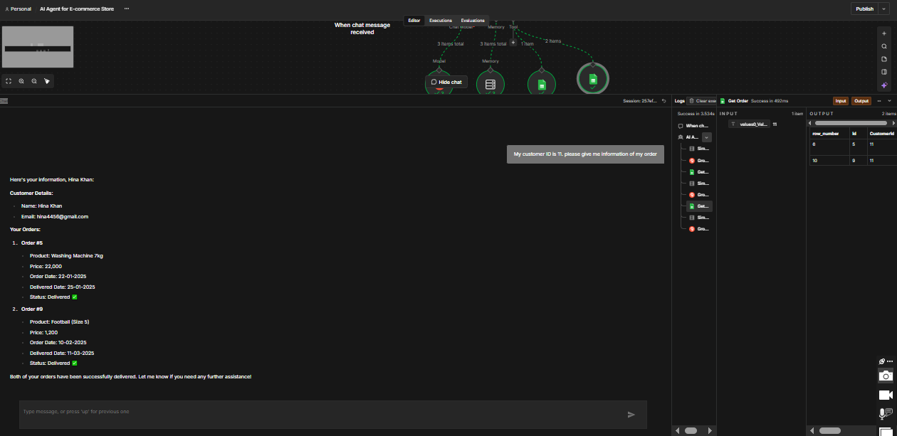
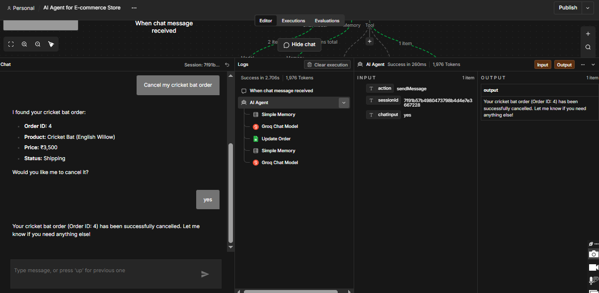

Projects / E-commerce Store Agent (Daraz)
Customer support · E-commerce
E-commerce Store Agent (Daraz)
A chat agent for an online store that looks up customers and orders and can cancel an order after the customer confirms.
The problem
Online stores get the same questions every day: where is my order, what did I buy, please cancel it. Staff answer them one by one.
The solution
A chat agent with three Google Sheets tools: Get Customer, Get Order and Update Order. It finds the customer by ID, lists their orders with product, price, dates and status, and cancels an order only after the customer says yes. Simple Memory keeps the conversation together.
How it works
- Customer asks. The chat trigger sends the message to the AI agent.
- Look up the record. The agent reads the customer and order sheets.
- Answer. It replies with name, email and each order's product, price, dates and status.
- Cancel on request. The agent shows the order, asks for confirmation and writes the cancelled status to the sheet.
See it working




What the screenshots show
- A customer asking about ID 12 and getting first name, last name and email.
- A customer with ID 11 getting two orders with status Delivered.
- A cricket bat order in Shipping status, cancelled after the customer confirms.
A good fit for
- Daraz and other marketplace sellers
- Shopify and WooCommerce stores
- Any store with orders in a sheet or database
Want something like this for your business?
Tell me what slows your team down. I will tell you whether it can be automated and how it would work.